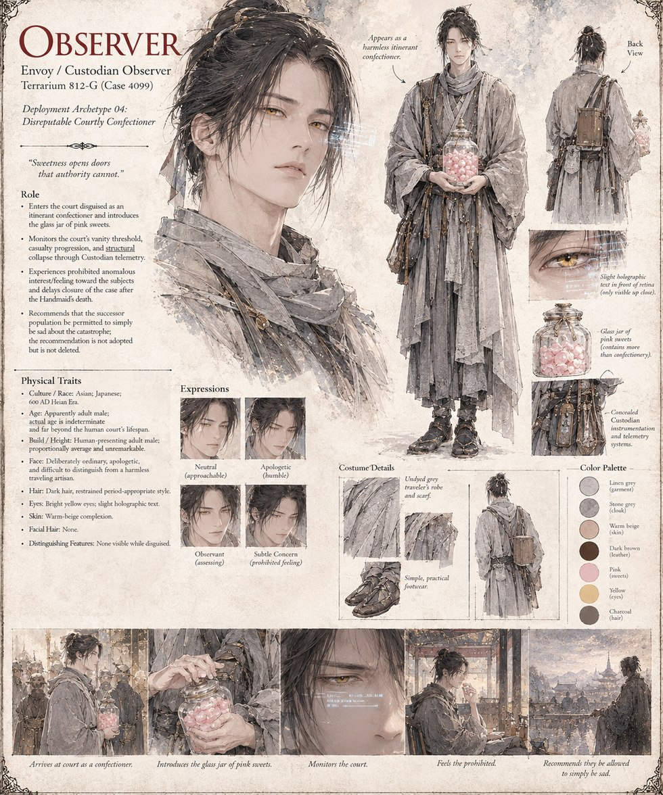

The Observer
Envoy / Custodian Observer · Terrarium 812-G (Case 4099) · Deployment Archetype 04
A field agent for the Cultivators — a different one from Ardwen, of a much lower-numbered case, and by his own count nowhere near as rare: eleven thousand and one terrariums logged by the time this one closes. He enters the court disguised as an itinerant confectioner and introduces the glass jar of sweets at the center of the whole case, then quietly monitors the court's collapse through instruments no one there can see. Against protocol, he comes to feel something for his subjects, and delays filing the case closed after the Principal Handmaid's death. His one recommendation — that the population left behind simply be allowed to be sad about what happened — is not adopted. It is also, notably, never deleted.
“Sweetness opens doors that authority cannot.”
Appears in The Ledger of a Single Sweetness